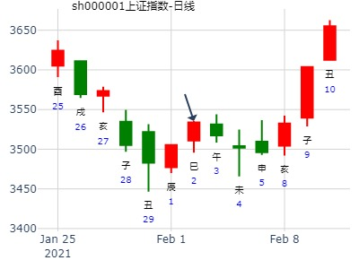
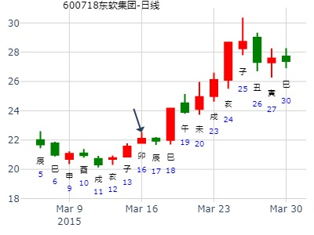
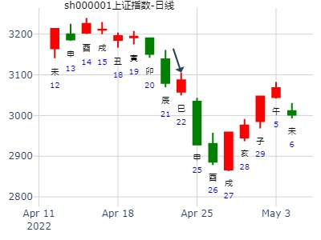

风生水起
占事: 中国重汽未来一个月
起卦方式：手动摇卦
公历时间：2015年1月5日8时6分
干支：甲午年 丙子月 辛巳日 壬辰时
旬空：辰巳 申酉 申酉 午未
艮宫：风泽中孚（游魂）
六神 伏 神 【本 卦】
螣蛇 ▄▄▄▄▄ 官鬼辛卯木
勾陈 妻财丙子水 ▄▄▄▄▄ 父母辛巳火
朱雀 ▄▄ ▄▄ 兄弟辛未土 世
青龙 子孙丙申金 ▄▄ ▄▄ 兄弟丁丑土
玄武 ▄▄▄▄▄ 官鬼丁卯木
白虎 ▄▄▄▄▄ 父母丁巳火 应
002603以岭药业2022.1.7庚申五-1.14丁卯五哪日顶？
伏呤天显时格
公历起卦时间：2022年1月9日8时39分 (电脑自动)
干支：辛丑年 辛丑月 壬戌日 甲辰时 （日空：子丑）
神煞：驿马－申 桃花－卯 日禄－亥 贵人－卯，巳
艮宫：风泽中孚 (游魂)
六神 伏神 本 卦
白虎 官鬼辛卯木 ▅▅▅▅▅
螣蛇 妻财丙子水 父母辛巳火 ▅▅▅▅▅
勾陈 兄弟辛未土 ▅▅ ▅▅ 世
朱雀 子孙丙申金 兄弟丁丑土 ▅▅ ▅▅
青龙 官鬼丁卯木 ▅▅▅▅▅
玄武 父母丁巳火 ▅▅▅▅▅ 应
午日冲旬空子水，未日月破但是值日力量更大
2011年1月 24~31日 上证模拟详细予想
猜 31 日 周 1 全天震荡
公历起卦时间：2011年1月25日22时26分 (在线摇卦)
干支：庚寅年 己丑月 庚辰日 丁亥时 （日空：申酉）
神煞：驿马－寅 桃花－酉 日禄－申 贵人－丑，未
艮宫：风泽中孚 (游魂)
六神 伏神 本 卦
腾蛇 官鬼辛卯木 ▅▅▅▅▅
勾陈 妻财丙子水 父母辛巳火 ▅▅▅▅▅
朱雀 兄弟辛未土 ▅▅ ▅▅ 世
青龙 子孙丙申金 兄弟丁丑土 ▅▅ ▅▅
玄武 官鬼丁卯木 ▅▅▅▅▅
白虎 父母丁巳火 ▅▅▅▅▅ 应

占事：2016年2月大盘涨跌？
公历起卦时间：2016年1月29日16时5分 (手工指定)
干支：乙未年 己丑月 庚戌日 甲申时 （日空：寅卯）
神煞：驿马－申 桃花－卯 日禄－申 贵人－丑，未
艮宫：风泽中孚 (游魂)
六神 伏神 本 卦
腾蛇 官鬼辛卯木 ▅▅▅▅▅
勾陈 妻财丙子水 父母辛巳火 ▅▅▅▅▅
朱雀 兄弟辛未土 ▅▅ ▅▅ 世
青龙 子孙丙申金 兄弟丁丑土 ▅▅ ▅▅
玄武 官鬼丁卯木 ▅▅▅▅▅
白虎 父母丁巳火 ▅▅▅▅▅ 应
测601216君正集团在2021.2.1-2021.2.5走势
公历起卦时间：2021年1月31日18时54分 (手工指定)
干支：庚子年 己丑月 己卯日 癸酉时 （日空：申酉）
神煞：驿马－巳 桃花－子 日禄－午 贵人－子，申
艮宫：风泽中孚 (游魂)
六神 伏神 本 卦
勾陈 官鬼辛卯木 ▅▅▅▅▅
朱雀 妻财丙子水 父母辛巳火 ▅▅▅▅▅
青龙 兄弟辛未土 ▅▅ ▅▅ 世
玄武 子孙丙申金 兄弟丁丑土 ▅▅ ▅▅
白虎 官鬼丁卯木 ▅▅▅▅▅
螣蛇 父母丁巳火 ▅▅▅▅▅ 应
试测上证2.1庚辰一-2.3哪日底？
男 占事：没填
公历起卦时间：2021年2月2日9时38分 (电脑自动)
干支：庚子年 己丑月 辛巳日 癸巳时 （日空：申酉）
神煞：驿马－亥 桃花－午 日禄－酉 贵人－寅，午
艮宫：风泽中孚 (游魂)
六神 伏神 本 卦
螣蛇 官鬼辛卯木 ▅▅▅▅▅
勾陈 妻财丙子水 父母辛巳火 ▅▅▅▅▅
朱雀 兄弟辛未土 ▅▅ ▅▅ 世
青龙 子孙丙申金 兄弟丁丑土 ▅▅ ▅▅
玄武 官鬼丁卯木 ▅▅▅▅▅
白虎 父母丁巳火 ▅▅▅▅▅ 应

中孚静卦_000897_津滨发展_2015-02-10
津滨发展下周走势
干支: 乙未年戊寅月丁巳日乙巳时 (旬空: 子丑 )
时间: 2015-02-10
中孚静卦
(游魂)
六神 伏神 本 卦
青龙 ▅▅▅▅▅ 官鬼卯木
玄武 妻财子水▅▅▅▅▅ 父母巳火
白虎 ▅▅ ▅▅ 兄弟未土 世
腾蛇 子孙申金▅▅ ▅▅ 兄弟丑土
勾陈 ▅▅▅▅▅ 官鬼卯木
朱雀 ▅▅▅▅▅ 父母巳火 应
午冲旬空子。
占事：600718东软集团在下周的走势
公历起卦时间：2015年3月15日20时25分 (手工指定)
干支：乙未年 己卯月 庚寅日 丙戌时 （日空：午未）
艮宫：风泽中孚 (游魂)
六神 伏神 本 卦
腾蛇 官鬼辛卯木 ▅▅▅▅▅
勾陈 妻财丙子水 父母辛巳火 ▅▅▅▅▅
朱雀 兄弟辛未土 ▅▅ ▅▅ 世
青龙 子孙丙申金 兄弟丁丑土 ▅▅ ▅▅
玄武 官鬼丁卯木 ▅▅▅▅▅
白虎 父母丁巳火 ▅▅▅▅▅ 应
巳日居然涨停。
兄弟旬空

测2020.3.18上证收盘十位数
男 占事：没填
公历起卦时间：2020年3月17日20时27分 (电脑自动)
干支：庚子年 己卯月 己未日 甲戌时 （日空：子丑）
神煞：驿马－巳 桃花－子 日禄－午 贵人－子，申
艮宫：风泽中孚 (游魂)
六神 伏神 本 卦
勾陈 官鬼辛卯木 ▅▅▅▅▅
朱雀 妻财丙子水 父母辛巳火 ▅▅▅▅▅
青龙 兄弟辛未土 ▅▅ ▅▅ 世
玄武 子孙丙申金 兄弟丁丑土 ▅▅ ▅▅
白虎 官鬼丁卯木 ▅▅▅▅▅
螣蛇 父母丁巳火 ▅▅▅▅▅ 应
《周易》——风泽中孚 巽上兑下
测600497 驰宏锌锗3.21癸酉一 -3.25丁丑五哪日顶？
公历起卦时间：2022年3月20日10时25分 (电脑自动)
干支：壬寅年 癸卯月 壬申日 乙巳时 （日空：戌亥）
神煞：驿马－寅 桃花－酉 日禄－亥 贵人－卯，巳
风泽中孚
六神 伏神 本 卦
白虎 官鬼辛卯木 ▅▅▅▅▅
螣蛇 妻财丙子水 父母辛巳火 ▅▅▅▅▅
勾陈 兄弟辛未土 ▅▅ ▅▅ 世
朱雀 子孙丙申金 兄弟丁丑土 ▅▅ ▅▅
青龙 官鬼丁卯木 ▅▅▅▅▅
玄武 父母丁巳火 ▅▅▅▅▅ 应
主题：合肥百货在十天内的走势
乙未 庚辰 壬子 乙巳 (寅卯空) 乙未年二月十八
(2015/04/06 10:50:00)
风泽中孚
白虎 官鬼卯木 ／
妻财子水：腾蛇 父母巳火 ／
勾陈 兄弟辛未 ∥ 世
子孙申金：朱雀 兄弟丑土 ∥
青龙 官鬼卯木 ／
玄武 父母巳火 ／ 应
占事:18日-22日大盘走势
公历起卦时间：2011年04月17日22时23分 (手动摇卦)
干支：辛卯年 壬辰月 壬寅日 辛亥时 （日空：辰巳）
神煞：驿马─申 桃花─卯 日禄─亥 贵人─巳，卯
艮宫：风泽中孚（游魂）
六神 伏 神 【本 卦】
白虎 ▄▄▄▄▄ 官鬼辛卯木
螣蛇 妻财丙子水 ▄▄▄▄▄ 父母辛巳火
勾陈 ▄▄ ▄▄ 兄弟辛未土 世
朱雀 子孙丙申金 ▄▄ ▄▄ 兄弟丁丑土
青龙 ▄▄▄▄▄ 官鬼丁卯木
玄武 ▄▄▄▄▄ 父母丁巳火 应
中孚。静卦。财月克日泄。绝于飞神。弱。 见大顶
4月25日至4月29日大盘预测
公历时间：2022年4月22日16时40分
干 支：壬寅年 甲辰月 乙巳日 甲申时
旬 空：辰巳 寅卯 寅卯 午未
神 煞：驿马─亥 桃花─午 日禄─卯 贵人─子，申
艮宫：风泽中孚（游魂）
六神 伏 神 【本 卦】
玄武 ▄▄▄▄▄ 官鬼辛卯木
白虎 妻财丙子水 ▄▄▄▄▄ 父母辛巳火
螣蛇 ▄▄ ▄▄ 兄弟辛未土 世
勾陈 子孙丙申金 ▄▄ ▄▄ 兄弟丁丑土
朱雀 ▄▄▄▄▄ 官鬼丁卯木
青龙 ▄▄▄▄▄ 父母丁巳火 应

明天汉得信息（300170）涨跌？ (手工指定)
干支：乙未年 辛巳月 丁酉日 庚戌时 （日空：辰巳）
艮宫：风泽中孚 (游魂)
六神 伏神 本 卦
青龙 官鬼辛卯木 ▅▅▅▅▅
玄武 妻财丙子水 父母辛巳火 ▅▅▅▅▅
白虎 兄弟辛未土 ▅▅ ▅▅ 世
腾蛇 子孙丙申金 兄弟丁丑土 ▅▅ ▅▅
勾陈 官鬼丁卯木 ▅▅▅▅▅
朱雀 父母丁巳火 ▅▅▅▅▅ 应
占事：6月15－19日沪市走势
起卦方式：手工指定
公历时间：2015年6月14日14时23分
干 支：乙未年 壬午月 辛酉日 乙未时
旬 空：辰巳 申酉 子丑 辰巳
神 煞：驿马─亥 桃花─午 日禄─酉 贵人─寅，午
艮宫：风泽中孚（游魂）
六神 伏 神 【本 卦】
螣蛇 ▄▄▄▄▄ 官鬼辛卯木
勾陈 妻财丙子水 ▄▄▄▄▄ 父母辛巳火
朱雀 ▄▄ ▄▄ 兄弟辛未土 世
青龙 子孙丙申金 ▄▄ ▄▄ 兄弟丁丑土
玄武 ▄▄▄▄▄ 官鬼丁卯木
白虎 ▄▄▄▄▄ 父母丁巳火 应
600516方大炭素何时单日5%涨幅？
男 占事：没填
公历起卦时间：2020年6月19日8时47分 (电脑自动)
干支：庚子年 壬午月 癸巳日 丙辰时 （日空：午未）
神煞：驿马－亥 桃花－午 日禄－子 贵人－卯，巳
艮宫：风泽中孚 (游魂)
六神 伏神 本 卦
白虎 官鬼辛卯木 ▅▅▅▅▅
螣蛇 妻财丙子水 父母辛巳火 ▅▅▅▅▅
勾陈 兄弟辛未土 ▅▅ ▅▅ 世
朱雀 子孙丙申金 兄弟丁丑土 ▅▅ ▅▅
青龙 官鬼丁卯木 ▅▅▅▅▅
玄武 父母丁巳火 ▅▅▅▅▅ 应
中孚静卦_鹏鼎控股到年底_2024-06-20
今天才8月5日，暂时以30天画图。
时间: 2024-06-20
干支: 甲辰年庚午月乙卯日 (旬空: 子丑 )
中孚静卦
(游魂)
六神 伏神 本 卦
玄武 ▅▅▅▅▅ 官鬼卯木
白虎 妻财子水▅▅▅▅▅ 父母巳火
腾蛇 ▅▅ ▅▅ 兄弟未土 世
勾陈 子孙申金▅▅ ▅▅ 兄弟丑土
朱雀 ▅▅▅▅▅ 官鬼卯木
青龙 ▅▅▅▅▅ 父母巳火 应
600132重庆啤酒二周走势
时间： 2015年6月24日10时21分 （112-211 远志硬币）
干支：乙未年 壬午月 辛未日 癸巳时 （日空：戌亥）
艮宫：风泽中孚 (游魂)
六神 伏神 本 卦
腾蛇 官鬼辛卯木 ▅▅▅▅▅
勾陈 妻财丙子水 父母辛巳火 ▅▅▅▅▅
朱雀 兄弟辛未土 ▅▅ ▅▅ 世
青龙 子孙丙申金 兄弟丁丑土 ▅▅ ▅▅
玄武 官鬼丁卯木 ▅▅▅▅▅
白虎 父母丁巳火 ▅▅▅▅▅ 应

占事：002009
起卦方式：手工指定
公历时间：2013年7月19日9时6分
干 支：癸巳年 己未月 丙戌日 癸巳时
旬 空：午未 子丑 (午未) 午未
神 煞：驿马─申 桃花─卯 日禄─巳 贵人─酉，亥
艮宫：风泽中孚（游魂）
六神 伏 神 【本 卦】
青龙 ▄▄▄▄▄ 官鬼辛卯木
玄武 妻财丙子水 ▄▄▄▄▄ 父母辛巳火
白虎 ▄▄ ▄▄ 兄弟辛未土 世
螣蛇 子孙丙申金 ▄▄ ▄▄ 兄弟丁丑土
勾陈 ▄▄▄▄▄ 官鬼丁卯木
朱雀 ▄▄▄▄▄ 父母丁巳火 应
试断：才不上卦，兄弟未土旺相持世，收阴
拉高后下跌收跌0.47、4.55%的阴线。
中孚静卦。7.21创业板指数399006走势
姓名：入定观
公历时间：2022年7月21日8时31分
干 支：壬寅年 丁未月 乙亥日 庚辰时 旬空：申酉
艮宫：风泽中孚（游魂）
六神 伏 神 【本 卦】
玄武 ▄▄▄▄▄ 官鬼辛卯木
白虎 妻财丙子水 ▄▄▄▄▄ 父母辛巳火
螣蛇 ▄▄ ▄▄ 兄弟辛未土 世
勾陈 子孙丙申金 ▄▄ ▄▄ 兄弟丁丑土
朱雀 ▄▄▄▄▄ 官鬼丁卯木
青龙 ▄▄▄▄▄ 父母丁巳火 应
云南铜业 近期走势--设定 2周
公历时间：2014年7月25日10时52分
干 支：甲午年 辛未月 丁酉日 乙巳时
旬 空：辰巳 戌亥 (辰巳) 寅卯
艮宫：风泽中孚（游魂）
六神 伏 神 【本 卦】
青龙 ▄▄▄▄▄ 官鬼辛卯木
玄武 妻财丙子水 ▄▄▄▄▄ 父母辛巳火
白虎 ▄▄ ▄▄ 兄弟辛未土 世
螣蛇 子孙丙申金 ▄▄ ▄▄ 兄弟丁丑土
勾陈 ▄▄▄▄▄ 官鬼丁卯木
朱雀 ▄▄▄▄▄ 父母丁巳火 应
占事：测明天002648这个股票能上涨吗？
公历起卦时间：2015年7月27日19时22分
干支：乙未年 癸未月 甲辰日 甲戌时 （日空：寅卯）
神煞：驿马－寅 桃花－酉 日禄－寅 贵人－丑，未
艮宫：风泽中孚 (游魂)
六神 伏神 本 卦
玄武 官鬼辛卯木 ▅▅▅▅▅
白虎 妻财丙子水 父母辛巳火 ▅▅▅▅▅
腾蛇 兄弟辛未土 ▅▅ ▅▅ 世
勾陈 子孙丙申金 兄弟丁丑土 ▅▅ ▅▅
朱雀 官鬼丁卯木 ▅▅▅▅▅
青龙 父母丁巳火 ▅▅▅▅▅ 应
yxx8811:极大可能大跌，主卦涣卦人心涣散，降之象，父动生兄---参考待验
中孚静卦_600230
占事: 沧州大化未来12日走势如何？2周
时间: 2021-08-20
干支: 辛丑年丙申月庚子日 (旬空: 辰巳 )
中孚静卦
(游魂)
六神 伏神 本 卦
腾蛇 ▅▅▅▅▅ 官鬼卯木
勾陈 妻财子水▅▅▅▅▅ 父母巳火
朱雀 ▅▅ ▅▅ 兄弟未土 世
青龙 子孙申金▅▅ ▅▅ 兄弟丑土
玄武 ▅▅▅▅▅ 官鬼卯木
白虎 ▅▅▅▅▅ 父母巳火 应
财子得到日月，飞神又空。看涨。
手摇银行板块 9月13-17日周卦 -以600036代替
公历：2021年9月12日21时16分，星期日。
农历：辛丑年 八月 初六日 亥时。
干支：辛丑年 丁酉月 癸亥日 癸亥时 (卦身：酉)
主变卦 风泽中孚(艮宫-游魂) [空亡:子、丑]
白虎 ▅▅▅▅▅ 官鬼辛卯木
螣蛇 妻财丙子水 ▅▅▅▅▅ 父母辛巳火
勾陈 ▅▅ ▅▅ 兄弟辛未土 世
朱雀 子孙丙申金 ▅▅ ▅▅ 兄弟丁丑土
青龙 ▅▅▅▅▅ 官鬼丁卯木
玄武 ▅▅▅▅▅ 父母丁巳火 应
占事：上证未来约12天2周的高低点日
公历起卦时间：2016年9月17日19时20分 (手工指定)
干支：丙申年 丁酉月 壬寅日 庚戌时 （日空：辰巳）
神煞：驿马－申 桃花－卯 日禄－亥 贵人－卯，巳
艮宫：风泽中孚 (游魂)
六神 伏神 本 卦
白虎 官鬼辛卯木 ▅▅▅▅▅
腾蛇 妻财丙子水 父母辛巳火 ▅▅▅▅▅
勾陈 兄弟辛未土 ▅▅ ▅▅ 世
朱雀 子孙丙申金 兄弟丁丑土 ▅▅ ▅▅
青龙 官鬼丁卯木 ▅▅▅▅▅
玄武 父母丁巳火 ▅▅▅▅▅ 应
财孙暗伏，不知怎判断，该是孙作用爻，只是作测试，不可作任何投资决策依据。
我知道这次划线不准，纯粹是赌特码，毫无技术依据：
占事：戌月行情
公历时间：2022年10月8日20时14分
干 支：壬寅年 庚戌月 甲午日 甲戌时
旬 空：辰巳 寅卯 辰巳 申酉
神 煞：驿马─申 桃花─卯 日禄─寅 贵人─丑，未
艮宫：风泽中孚（游魂）
六神 伏 神 【本 卦】
玄武 ▄▄▄▄▄ 官鬼辛卯木
白虎 妻财丙子水 ▄▄▄▄▄ 父母辛巳火
螣蛇 ▄▄ ▄▄ 兄弟辛未土 世
勾陈 子孙丙申金 ▄▄ ▄▄ 兄弟丁丑土
朱雀 ▄▄▄▄▄ 官鬼丁卯木
青龙 ▄▄▄▄▄ 父母丁巳火 应
000735罗牛山股票今后的走势-假设2周画图
丁亥 辛亥 丁未 庚子 (寅卯空)
丁亥年九月三十(2007/11/08 23:42:17)
风泽中孚
青龙 官鬼卯木 ／ 妻财子水：
玄武 父母巳火 ／
白虎 兄弟未土 ∥ 艮子孙申金：
腾蛇 兄弟丑土 ∥
勾陈 官鬼卯木 ／
朱雀 父母巳火 ／ 应
占事：000935四川双马9日涨跌
排卦：.六爻在线排盘系统 .
公历起卦时间：2013年12月6日15时5分 (电脑自动)
干支：癸巳年 癸亥月 丙午日 丙申时 （日空：寅卯）
神煞：驿马－申 桃花－卯 日禄－巳 贵人－酉，亥
艮宫：风泽中孚 (游魂)
六神 伏神 本 卦
青龙 官鬼辛卯木 ▅▅▅▅▅
玄武 妻财丙子水 父母辛巳火 ▅▅▅▅▅
白虎 兄弟辛未土 ▅▅ ▅▅ 世
腾蛇 子孙丙申金 兄弟丁丑土 ▅▅ ▅▅
勾陈 官鬼丁卯木 ▅▅▅▅▅
朱雀 父母丁巳火 ▅▅▅▅▅ 应
男 占事：试测12.28星期一上证收盘十位数？
公历起卦时间：2020年12月27日14时40分 (电脑自动)
干支：庚子年 戊子月 甲辰日 辛未时 （日空：寅卯）
神煞：驿马－寅 桃花－酉 日禄－寅 贵人－丑，未
艮宫：风泽中孚 (游魂)
六神 伏神 本 卦
玄武 官鬼辛卯木 ▅▅▅▅▅
白虎 妻财丙子水 父母辛巳火 ▅▅▅▅▅
螣蛇 兄弟辛未土 ▅▅ ▅▅ 世
勾陈 子孙丙申金 兄弟丁丑土 ▅▅ ▅▅
朱雀 官鬼丁卯木 ▅▅▅▅▅
青龙 父母丁巳火 ▅▅▅▅▅ 应